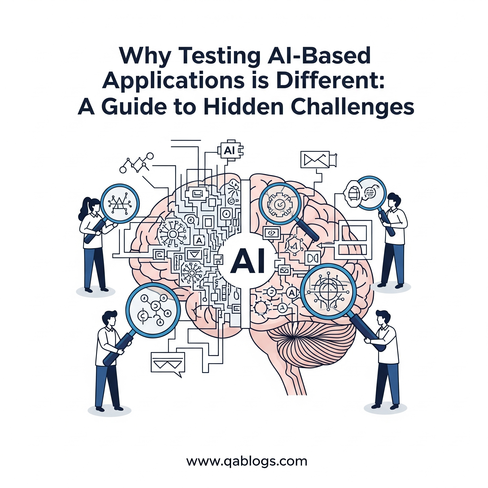

Why Testing AI-Based Applications is Different: A Guide to Hidden Challenges

Key Takeaways
- 70% of QA teams struggle with testing AI-driven systems
- AI testing requires specialized approaches due to non-deterministic behavior
- Data quality and bias are critical factors in AI testing
- Continuous testing is essential for evolving AI models
The rise of artificial intelligence (AI) has transformed software development, enabling applications that learn, adapt, and make decisions with unprecedented autonomy. From chatbots to recommendation engines, AI-based applications are reshaping industries. However, testing these applications presents unique challenges that traditional QA approaches struggle to address. For QA professionals, understanding these differences is critical to ensuring robust, reliable, and ethical AI systems. This blog, tailored for QA Blogs, dives into why testing AI-based applications is distinct, highlights hidden challenges, and offers practical strategies to overcome them, all while optimizing for SEO to boost visibility.
Understanding AI-Based Applications
AI-based applications leverage machine learning (ML), natural language processing (NLP), and other AI technologies to perform tasks like image recognition, predictive analytics, or conversational interactions. Unlike traditional software, which follows deterministic rules, AI systems rely on probabilistic models trained on vast datasets. This fundamental difference introduces complexities that make testing AI applications uniquely challenging. According to a 2025 Katalon report, 70% of QA teams struggle with testing AI-driven systems due to their dynamic nature, underscoring the need for specialized approaches.
Why Testing AI-Based Applications is Different
Testing AI-based applications diverges from traditional QA in several key ways:
- Non-Deterministic Behavior: Traditional software produces predictable outputs for given inputs. AI systems, however, generate probabilistic outputs that can vary, even with identical inputs, due to their reliance on trained models. This unpredictability complicates test case design and validation.
- Data Dependency: AI applications depend heavily on training data quality and diversity. Biases or gaps in data can lead to unexpected behaviors, making data validation a critical part of testing.
- Continuous Learning: Many AI systems adapt over time through retraining or real-time learning, which can alter functionality post-deployment, requiring ongoing testing.
- Complex Metrics: Traditional QA focuses on functional correctness, but AI testing involves evaluating metrics like accuracy, precision, recall, and fairness, which are harder to quantify.
- Ethical and Bias Concerns: AI systems can inadvertently perpetuate biases or raise ethical issues, necessitating tests for fairness, transparency, and compliance with regulations.
These differences demand a shift in QA mindset, tools, and methodologies to ensure AI applications meet quality standards.
Hidden Challenges in Testing AI-Based Applications
Testing AI systems involves navigating several hidden challenges that can derail quality assurance efforts. Here's a detailed look at the most critical ones:
1. Unpredictable Outputs and Model Drift
AI models may produce varying outputs due to their probabilistic nature or changes in training data over time (model drift). For example, a recommendation engine might suggest different products for the same user as it learns from new data. This makes it difficult to define "correct" outputs for test cases.
Solution: Implement statistical testing to evaluate outputs against expected ranges rather than fixed results. Use tools like TensorFlow Model Analysis to monitor model performance and detect drift. Regularly retrain models with fresh, diverse data to maintain consistency.
2. Data Quality and Bias
The performance of AI applications hinges on the quality of training and test data. Poor data quality—such as incomplete datasets or biased samples—can lead to inaccurate predictions or discriminatory outcomes. For instance, a facial recognition system trained on non-diverse data may fail for certain demographics.
Solution: Conduct data validation testing to ensure datasets are representative, diverse, and free from biases. Use techniques like data augmentation to enhance dataset variety. Tools like AI Fairness 360 can help identify and mitigate bias in datasets.
3. Testing for Edge Cases
AI systems must handle rare or unexpected inputs, but identifying edge cases is challenging due to the vast input space. For example, a chatbot may struggle with slang or ambiguous queries not covered in training data.
Solution: Leverage exploratory testing to simulate real-world scenarios and stress-test the system with edge cases. Use fuzz testing to generate random inputs and uncover hidden vulnerabilities. Tools like KaneAI by LambdaTest can automate edge-case generation using NLP-driven test scripts.
4. Lack of Transparency (Black-Box Problem)
Many AI models, especially deep learning systems, operate as black boxes, making it difficult to understand their decision-making processes. This opacity complicates debugging and validation.
Solution: Adopt explainable AI (XAI) techniques to interpret model decisions. Tools like SHAP or LIME can provide insights into feature importance and model behavior. Additionally, document model assumptions and training processes to aid QA efforts.
5. Scalability and Performance Testing
AI applications often process large volumes of data in real-time, requiring robust scalability and performance testing. For instance, a recommendation system must handle thousands of simultaneous user requests without latency.
Solution: Perform load testing and stress testing using tools like JMeter or Locust to simulate high-traffic scenarios. Optimize resource allocation with AI-driven test orchestration, as offered by platforms like Aqua Cloud.
6. Ethical and Compliance Issues
AI applications can raise ethical concerns, such as privacy violations or biased decision-making. Regulatory frameworks like GDPR or CCPA impose strict requirements on data handling and transparency, adding complexity to QA.
Solution: Incorporate compliance testing to ensure adherence to legal and ethical standards. Use frameworks like AI Fairness 360 to test for bias and fairness. Engage cross-functional teams, including legal experts, to validate compliance.
7. Continuous Testing for Evolving Models
AI systems that learn continuously require ongoing testing to ensure updates don't degrade performance. Traditional QA often assumes static software, but AI demands a dynamic approach.
Solution: Integrate continuous testing into CI/CD pipelines using tools like Jenkins or GitHub Actions. Automate regression testing to validate model updates, and monitor real-world performance with observability tools like Prometheus.
Best Practices for Testing AI-Based Applications
To address these challenges, QA teams can adopt the following best practices:
- Combine Manual and Automated Testing: Use manual exploratory testing for edge cases and user experience, complemented by AI-driven automation for repetitive tasks. Tools like KaneAI simplify test creation with NLP-driven scripting.
- Validate Data Quality: Rigorously test training and test datasets for completeness, diversity, and bias. Use data profiling tools to identify anomalies.
- Focus on Metrics Beyond Functionality: Evaluate AI-specific metrics like precision, recall, F1-score, and fairness alongside traditional QA metrics.
- Leverage AI Testing Tools: Platforms like Katalon, Functionize, or LambdaTest's KaneAI offer AI-driven test generation, optimization, and self-healing capabilities, reducing manual overhead.
- Test for Explainability: Use XAI tools to ensure model decisions are interpretable, fostering trust and aiding debugging.
- Monitor Post-Deployment: Implement real-time monitoring to detect model drift or performance degradation, using tools like Grafana or Datadog.
- Collaborate Across Teams: Work with data scientists, developers, and legal teams to align testing with technical, ethical, and regulatory requirements.
Real-World Applications
Testing AI-based applications is critical across industries:
- E-commerce: Test recommendation engines to ensure accurate, unbiased product suggestions.
- Healthcare: Validate diagnostic AI systems for accuracy and compliance with regulations like HIPAA.
- Finance: Ensure fraud detection models are robust and free from biases that could unfairly flag transactions.
- Customer Service: Test chatbots for conversational accuracy and handling of edge cases like ambiguous queries.
Tools to Streamline AI Testing
Several tools can help QA teams tackle AI testing challenges:
- KaneAI by LambdaTest: Simplifies test creation with NLP-driven scripting and supports multi-language code export.
- Katalon: Offers AI-driven test automation and analytics for efficient QA workflows.
- Functionize: Provides smart test creation with ML-driven self-healing tests.
- AI Fairness 360: Detects and mitigates bias in AI models.
- TensorFlow Model Analysis: Monitors model performance and drift.
FAQs
Why is testing AI applications different from traditional software?
AI applications rely on probabilistic models and continuous learning, unlike the deterministic logic of traditional software, requiring specialized testing for data quality, model drift, and ethical concerns.
How can QA teams address bias in AI systems?
Use tools like AI Fairness 360 to test datasets and models for bias, ensuring diverse and representative data. Engage cross-functional teams to validate fairness.
What tools are best for testing AI applications?
KaneAI, Katalon, Functionize, and TensorFlow Model Analysis are excellent for automating test creation, monitoring performance, and addressing AI-specific challenges.
How do you test for model drift?
Implement statistical testing and use tools like TensorFlow Model Analysis to monitor performance metrics over time, retraining models as needed.
Conclusion
Testing AI-based applications demands a paradigm shift from traditional QA, driven by their non-deterministic nature, data dependency, and ethical implications. Hidden challenges like model drift, data bias, and lack of transparency require specialized tools and strategies, from statistical testing to explainable AI. By adopting best practices like continuous testing, data validation, and AI-driven tools like KaneAI or Katalon, QA teams can ensure robust, reliable, and ethical AI systems. As AI continues to evolve, staying ahead of these challenges will be crucial for delivering high-quality applications.
Ready to master AI testing? Explore the latest QA trends and tools at QA Blogs to elevate your testing strategy and conquer the complexities of AI-driven development.
Join Our Community of QA Professionals
Get exclusive access to in-depth articles, testing strategies, and industry insights. Stay ahead of the curve with our expert-curated content delivered straight to your inbox.
Nikunj Mistri
Founder, QA Blogs
About the Author